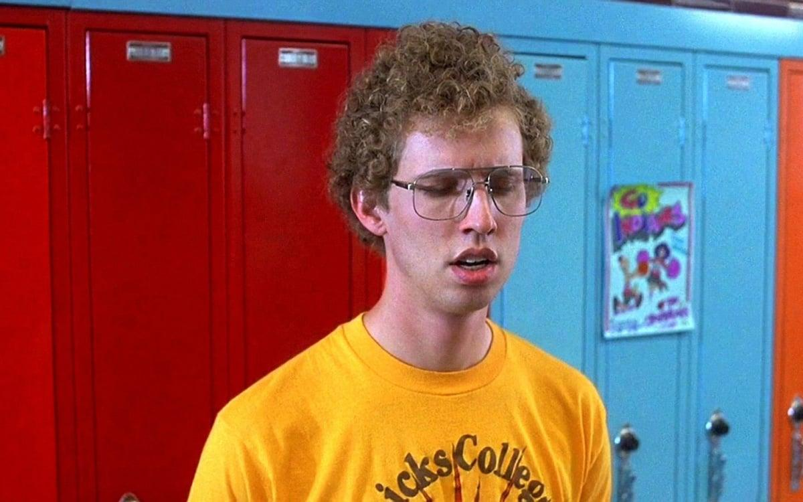
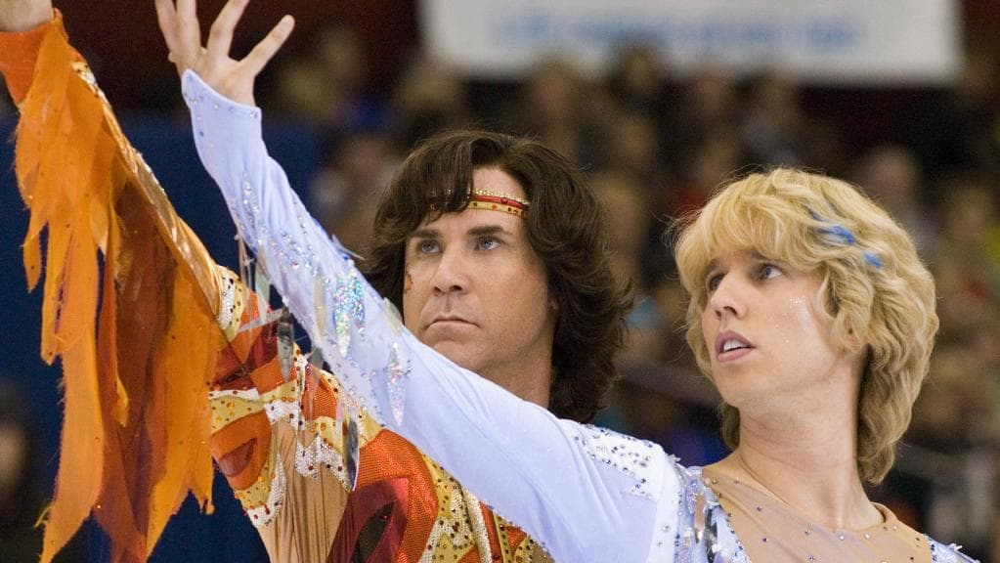

A07 - D: Art Direction vs. Graphic Design
Full disclosure, I’m getting a lot of this material from Dan Mall. I suggest that you read his article as I’m only giving you the highlights. Now on to the topic at hand. With print design, generally you are designing a single page that is a fixed size. Even books have a limited number of page variations, and they are all the same size. Websites have multiple pages, at multiple sizes, with widely varying content. This gives the designer a lot to design versus a poster or business card. Since there is a lot to design for a website, you want to be efficient as possible. Spending a lot of time on revisions to the visual design will drive up costs (that may not be billable), slow down font-end development, and put the project behind.
As a graphic designer you want to get on the same page visually as the client early on before you get too far into the visual design process. While showing a client a bunch of different versions of business card isn’t necessarily prohibitive, trying to do that with a website is. Fortunately there are multiple ways to get on the same page as your client visually before you begin to design. Since you are in the very beginning stages of the project and don’t have content to design yet, take advantage of this time by determining the Art Direction of the website. Determining the art direction before you start designing will save a lot of unnecessary back and forth during the critical design phase.
So, what is “Art Direction,” and how is it different than “Graphic Design?” I like Dan Mall’s explanation that everyone is an art director, but not everyone is a designer. For example, there isn’t a single person who isn’t visually impaired who can not see the distinct visual direction of the following two images.


Clearly the first image of the clown is meant to scare the heck out of you. The second image is clearly meant to be fun. In a nutshell, this is art direction, and it can be figured out before any design is done! At the time of me writing this, even my 9 month old daughter notices the difference in art direction between these two cartoons!


Hint: she doesn’t like Clone Wars, but Likes Dragon Ball Z.
If anyone can describe art direction, why do you need to figure it out before you design? Well, while everyone understands art direction, not everyone has the same definition of ambiguous terms. For example, what would you do if your client said they wanted the project’s art direction to be funny? Everyone knows what funny is, but everyone has a different interpretation of what funny could look like.


Blades of Glory and Napoleon Dynamite are both considered very funny movies. However, they have totally different approaches to funny. Let’s image that your client asked for funny, and you delivered the Napoleon Dynamite version of funny and they hated it because they were expecting Blades of Glory funny. You just wasted a ton of time making visual mockups to determine that you were not on the same page as your client.
Another example, and the one I most often hear clients say, is they want something “clean”. As graphic designer who is fascinated with the history of design, I guarantee that my interpretation of the term clean is vastly different from my client. Personally, when I hear the term “clean” I think of a basic white space with very little decoration or furniture.

Now, if I were to follow the client’s preferred art direction of “clean”, but with my visual interpretation they could hate it, especially if they were expecting one of these versions of “clean”.


Finally, if Art Direction is the feel (a major oversimplification), what is design? We will talk about design as the semester goes along, but for now I leave you with this example. One of these images nails the art direction, but miserably fails at design. The other image arguably nails the design, but massively fails at the art direction. I will let you guess as to which one is which.
Luckily there are multiple ways to get on the same page as your client long before you begin to design. My two favorite methods are Mood Decks, and Style Tiles. Both methods are very effective but are vastly different. As you advance in your career, I think you will begin to intuitively know which is a better method for the project you are working on. For the sake of learning, I’m going to ask you to do both.
Mood Deck
The simplest way to explain what a mood deck is by looking at one. Mood Decks are a quick way to visualize key words used in the initial client meeting. Simply picking multiple images and videos that represent the keyword and asking the client to pick amongst them will get you on the same page as the client in regards to art direction. Your job will be to pick several of the keywords you heard during our initial client meeting and create one mood deck to be shared with the client. You can use the template I supplied or create your own.
Mood Deck Grading
This assignment will be worth 10. You only need to make one mood deck, though it must have multiple adjectives that you are trying to determine the art direction with your client. Upload the files to DropBox.
- If you received between 5–10 points you successfully created a comprehensive mood deck that explores all the keywords from the client meeting.
- If you received between 1–4 points created a mood deck that explores only a few of the keywords from the client meeting.
- If you received 0 points you did not create a mood deck.
Style Tiles
Style Tiles are also a valuable tool to help hone in on the art direction. Just like with the mood deck, you are taking keywords from the client meeting and designing tiles to flush out the art direction. Style tiles do take a bit more time as you are creating from scratch and are actually doing some very initial design. Style tiles have an advantage over mood deck since the client will see both art direction and design. This makes the style tiles more accurate than mood deck, though a bit more time consuming.
In this assignment you are going to create two or more Style Tiles for the redesign of your website. You must use either Adobe Xd CC, Bohemian Coding Sketch, Figma, or InVision Studio to create your Style Tiles. You can pick whichever program you want to work with. As I mentioned at the beginning of the semester, Sketch is the industry standard, but Xd is free and sorta familiar. Studio has built in Animation features, so don’t forget that (you will be doing animations for this project by the end of the semester)!
Style Tile Contents
As you can see in the examples listed below, Style Tiles can vary wildly as long as they serve the purpose of defining the art direction of the project and set some guidelines for the creative team to work with. The following is an incomplete and evolving list of elements that must be included in your 1920 × 1080 pixel Style Tiles.
- Theme
- Adjectives
- Color Palette
- Font Set
- Iconography Styles
- Patterns and Textures
Grading
This assignment will be worth 20. You must make a minimum of 2 style tiles to be able to start a discussion about art direction with your client. Upload the files to DropBox.
Learning Objectives Applied
- Applying
- Make use of an interactive design process.
- Construct interactive designs with prototyping software.
- Analyzing
- Assess interactive prototypes for responsive web design principles.
- Evaluating
- Explain and defend design choices through formal presentations.
Assessment Rubric
- If you received between 11–20 points you successfully created the style tiles in the proper program with all of the contents listed above.
- If you received between 1–10 points you successfully created the style tiles in the proper program with most of the contents listed above.
- If you received 0 points you did not create the style tiles in the proper program with the contents listed above.